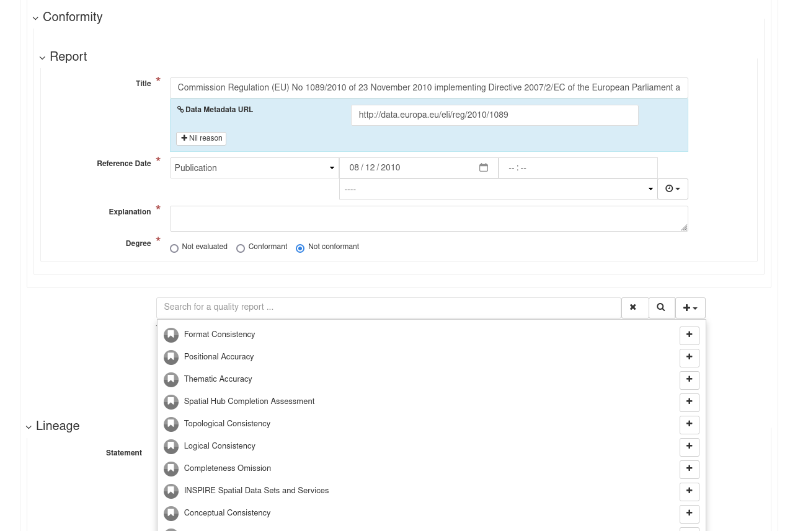

Improving Dataset Quality through Metadata
Jo Cook | Astun Technology
Who are Astun Technology?
We manage and host the SSDI for Scottish Government...
...sit on BSI IST36
...chair the UK Gemini WG
...and sit on the GeoNetwork PSC
Our Starting Point
There's an increasing focus on Data Quality across the Public Sector
and many frameworks and guidance on Quality Dimensions, and the Data Lifecycle
Everyone wants to make Data FAIR
But...
There's little technical guidance on how to apply this In Real Life
Some Practical Fixes...
Gemini 2.3
Data Quality and Lineage
Snippets
Drop-down pick lists
Visual changes for ambiguous elements
Reporting
Dashboards for SEO and Data Quality metrics
Any Questions?

Improving Dataset Quality through Metadata